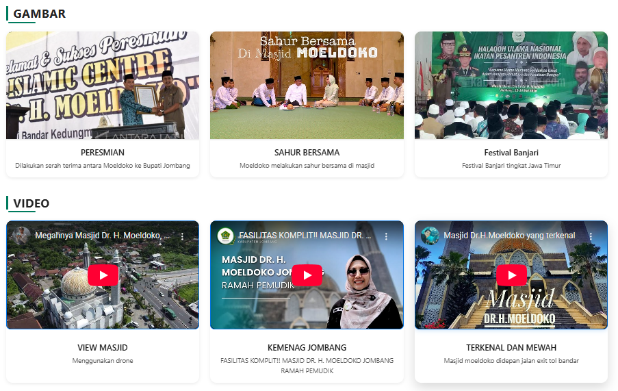
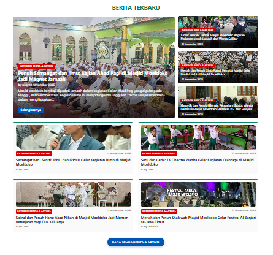
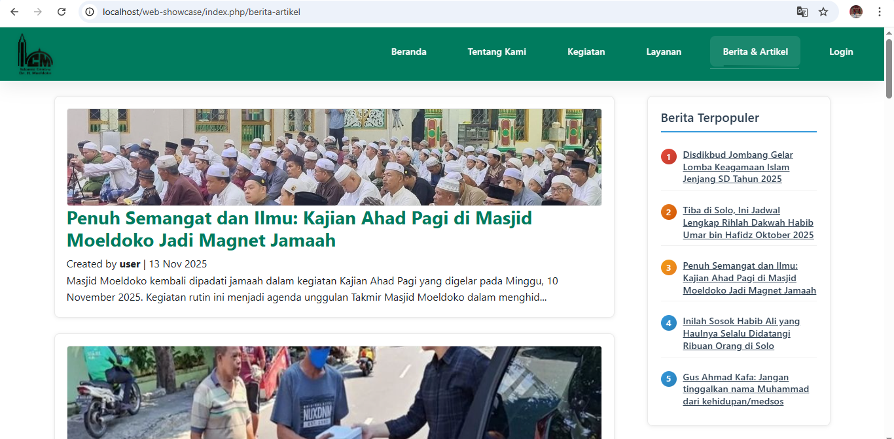

Tampilkan Karya Anda dengan Website Showcase
Mulai sekarang dan tampilkan karya terbaik Anda kepada dunia. Tanpa coding, tanpa ribet.
Portofolio Digital Anda
Tampilkan proyek, karya, atau produk dengan elegant



